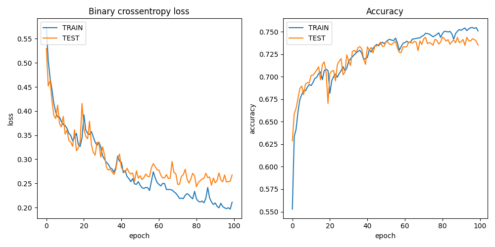
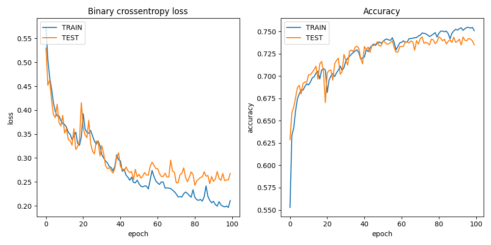

Introduction
In this tutorial, we will train a machine learning model to identify water in Sentinel-2 satellite images. We will be using code from this GitHub repo using this dataset.
Upload dataset
We need a dataset to train the ML model. We will use the Colonies CFS to distribute the dataset to different executors.
Method 1 - Colonies CLI
Download the dataset and unzip the archive.zip file to directory named water_body_dataset.
Then, upload to the dataset files to Colonies CFS.
colonies fs sync -l /water -d ./water_body_dataset
| water_body_1114.jpg | 6 KiB | /water |
| water_body_1209.jpg | 10 KiB | /water |
| water_body_1273.jpg | 9 KiB | /water |
| water_body_1552.jpg | 61 KiB | /water |
| water_body_7797.jpg | 4 KiB | /water |
| water_body_8847.jpg | 9 KiB | /water |
| water_body_1313.jpg | 8 KiB | /water |
| water_body_1615.jpg | 18 KiB | /water |
| water_body_1724.jpg | 1 KiB | /water |
| water_body_1801.jpg | 8 KiB | /water |
| water_body_1833.jpg | 11 KiB | /water |
+---------------------+----------+--------+
No files will be downloaded
/water:
=======
No files will be uploaded
No files will be downloaded
Are you sure you want to continue? (yes,no):
After the upload has finished, we can now list the dataset.
colonies fs label ls
+---------------------------------------------------------+-----------------+
| LABEL | NUMBER OF FILES |
+---------------------------------------------------------+-----------------+
| /water/Images | 2841 |
| /water/Masks | 2841 |
+---------------------------------------------------------+-----------------+
To access the dataset from an executor, the executor first needs to synchronize the data. This can be achieved in several ways; one method is to specify the /water label in the function specification fs section. The executor will then synchronize the dataset files to its local file system.
Alternatively, you can submit a function to an executor, requesting it to synchronize a specific label to its local file system without launching a container. The code below will download the dataset on the Leonardo HPC system.
{
"conditions": {
"executortype": "leonardo-booster-hpcexecutor",
"nodes": 1,
"processes-per-node": 1,
"cpu": "1000m",
"mem": "30Gi",
"gpu": {
"count": 0
},
"walltime": 60000
},
"funcname": "sync",
"fs": {
"mount": "/cfs",
"dirs": [
{
"label": "/water",
"dir": "/water",
"keepfiles": true,
"onconflicts": {
"onstart": {
"keeplocal": false
},
"onclose": {
"keeplocal": true
}
}
}
]
},
"maxwaittime": -1,
"maxexectime": 60000,
"maxretries": 3
}
The data set will then be available in /cfs/water/Images/ and /cfs/water/Masks/ in the container running on Leonardo.
colonies function submit --spec sync.json
Method 2 - Pollinator
First, find a target executor.
+----------------------+------------------------------+------------------------+
| NAME | TYPE | LOCATION |
+----------------------+------------------------------+------------------------+
| icekube | ice-kubeexecutor | ICE Datacenter, Sweden |
| lumi | lumi-small-hpcexecutor | CSC, Finland |
| garage-supercomputer | dev-hpcexecutor | Rutvik, Sweden |
| leonardo | leonardo-booster-hpcexecutor | Cineca, Italy |
+----------------------+------------------------------+------------------------+
Generate an empty working, targeting the LUMI HPC system. Note that the target executor type can be changed later.
mkdir waterml
cd waterml
pollinator new -e lumi-small-hpcexecutor
INFO[0000] Creating directory Dir=./cfs/src
INFO[0000] Creating directory Dir=./cfs/data
INFO[0000] Creating directory Dir=./cfs/result
INFO[0000] Generating Filename=./project.yaml
INFO[0000] Generating Filename=./cfs/data/hello.txt
INFO[0000] Generating Filename=./cfs/src/main.py
Copy the water_body_dataset to the ./cfs/data directory
cp ~/water_body_dataset ./cfs/data
The dataset will upload next time the project run.
pollinator run --follow
Uploading main.py 100% [===============] (4.3 MB/s)
Downloading water_body_8239.jpg 100% [===============] (248 kB/s)
Downloading water_body_701.jpg 100% [===============] (484 kB/s)
Downloading water_body_8159.jpg 100% [===============] (148 kB/s)
Downloading water_body_683.jpg 100% [===============] (145 kB/s)
Downloading water_body_967.jpg 100% [===============] (350 kB/s)
Downloading water_body_784.jpg 100% [===============] (906 kB/s)
Downloading water_body_922.jpg 100% [===============] (161 kB/s)
Downloading water_body_233.jpg 100% [===============] (251 kB/s)
Downloading water_body_1206.jpg 100% [===============] (720 kB/s)
Downloading water_body_1708.jpg 100% [===============] (1.3 MB/s)
Downloading water_body_2461.jpg 100% [===============] (560 kB/s)
...
The data set will then be available here in the running container:
projdir = os.environ.get("PROJECT_DIR")
image_path = projdir + '/data/water/Images/'
mask_path = projdir + '/data/water/Masks/'
Docker container
We are going the Container Executor, which comes in three variants.
Kube Executor runs containers as Kubernetes batch jobs.
Docker Executor runs containers as Docker containers on a baremetal servers or VMs.
HPC Executor runs containers as Singularity containers on HPC systems, managing them as Slurm jobs.
As the function specification is identical, meaning that we can easily switch between these 3 types of executors. To run containers, we first need to create a Dockerfile with the following content:
FROM docker.io/tensorflow/tensorflow:2.13.0-gpu
RUN apt-get update && apt-get install -y python3 python3-pip wget vim git fish libgl1-mesa-glx libglib2.0-0
RUN python3 -m pip install --upgrade pip
RUN pip3 install pycolonies opencv-python tqdm Pillow scikit-learn keras matplotlib numpy
Build and publish the Dockerfile and publish the Docker image at public Docker registry.
docker build -t johan/hackaton .
docker push johan/hackaton
The johan/hackaton Docker image has already been published at DockerHub.
Training the model
Now that we have uploaded the dataset and created a Docker container, it’s time to proceed with training the model.
Setup a Pollinator project
Create a new Pollinator project (or use the one you already created when uploading the dataset).
In the example, we assumed the water_dataset in available in Colonies CFS under the label /water.
mkdir waterml
cd waterml
pollinator new -e leonardo-booster-hpcexecutor
Edit the project.yaml file. Change the Docker image to johan/hackaton, increase required memory to
30000Mi, use 4 CPU cores (4000m).
Walltime defined the maximum time the process may run. In this case, it has to finish in 2000 seconds.
projectname: 559ac0c3a834594b337d10ebedf3134ea0ca3142cceab26b1aa5c17ba141999d
conditions:
executorType: leonardo-booster-hpcexecutor
nodes: 1
processesPerNode: 1
cpu: 4000m
mem: 30000Mi
walltime: 2000
gpu:
count: 1
name: ""
environment:
docker: johan/hackaton
rebuildImage: false
cmd: python3
source: main.py
Replace main.py
Download source code from this GitHub repo.
cd cfs/src
wget https://raw.githubusercontent.com/johankristianss/colonyoshackaton/main/src/main.py .
At line 132, change epochs to e.g 30.
epochs = 30
Note that the Python code saves the training result and a random prediction example in the result directory, which is automatically synchronized back to the client after process completion.
plt.savefig(projdir + '/result/res_' + processid + '.png')
plt.savefig(projdir + '/result/samples_' + processid + '.png')
ls cfs/result
.rw-r--r-- 55k johan 12 Dec 21:40 res_076e273a1d082dd2886892dfd7d1723e12c747cf2899f2c2ede27ceb55e06ae2.png
.rw-r--r-- 266k johan 12 Dec 21:40 samples_076e273a1d082dd2886892dfd7d1723e12c747cf2899f2c2ede27ceb55e06ae2.png
Train the model
Pollinator will automatically synchronize the cfs/src, cfs/data, and cfs/result directories to Colonies CFS, generate
a function specification and then submit the function specification, follow the process execution, and upon completion, synchronize the
project files back to your local computer.
pollinator run --follow
67/67 [==============================] - 1s 18ms/step - loss: 0.3434 - accuracy: 0.7024 - val_loss: 0.3263 - val_accuracy: 0.7038
Epoch 25/30
67/67 [==============================] - 1s 17ms/step - loss: 0.3307 - accuracy: 0.7092 - val_loss: 0.3146 - val_accuracy: 0.7121
Epoch 26/30
67/67 [==============================] - 1s 18ms/step - loss: 0.3139 - accuracy: 0.7140 - val_loss: 0.2947 - val_accuracy: 0.7249
Epoch 27/30
67/67 [==============================] - 1s 17ms/step - loss: 0.3226 - accuracy: 0.7110 - val_loss: 0.3027 - val_accuracy: 0.7244
Epoch 28/30
67/67 [==============================] - 1s 17ms/step - loss: 0.2994 - accuracy: 0.7208 - val_loss: 0.2910 - val_accuracy: 0.7259
Epoch 29/30
67/67 [==============================] - 1s 17ms/step - loss: 0.2910 - accuracy: 0.7239 - val_loss: 0.2781 - val_accuracy: 0.7261
Epoch 30/30
67/67 [==============================] - 1s 17ms/step - loss: 0.2856 - accuracy: 0.7258 - val_loss: 0.2733 - val_accuracy: 0.7313
23/23 [==============================] - 0s 4ms/step
INFO[0141] Process finished successfully ProcessID=61e597845ed3df4456c5be7d358e35141b8dc4c1f76a89d7caad0f31f792106c
Downloading samples_076e273a1d082dd2886892dfd7d1723e12c747cf2899f2c2ede27ceb55e06ae2.png 100% [===============] (5.0 MB/s)
Downloading res_076e273a1d082dd2886892dfd7d1723e12c747cf2899f2c2ede27ceb55e06ae2.png 100% [===============] (1.7 MB/s)
We can now open the sample and training plot pictures.
 
